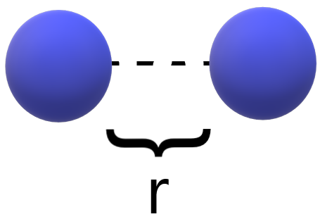

Machine learning for
chemical data
Faculty of Mathematics, University of Vienna, Vienna, Austria
Sections
- Preliminary: general processes
- Pair potential energy surface
- Global potential energy surface for small molecules
- Robust Shepard model for interpolation
- Learning quantum chemistry by minimal supervision
Preliminary
Process flow

Data

Pair potential energy surfaces
Lennard-Jones potential
Example: Lennard-Jones potential

\[
V_\text{LJ}(\textcolor{red} \epsilon, \textcolor{red}{\sigma}) = 4 \textcolor{red}\epsilon \Big[\Big(\frac{\textcolor{red} \sigma}{\textcolor{blue} r}\Big)^{12} - \Big(\frac{\textcolor{red} \sigma}{\textcolor{blue} r}\Big)^6\Big]
\]
Math Formulas
Here is an example of a formula:
\[ E = mc^2 \]
Another one:
\[ \int_0^\infty e^{-x^2} dx = \frac{\sqrt{\pi}}{2} \]
Plot